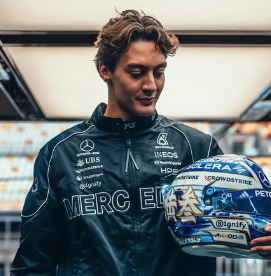

George Russell
George Russell
Team: Mercedes-AMG Petronas
Team Principal: Toto Wolff
Number: 63
Nationality: United Kingdom
Debut: 2019
Born: 15 February 1998
History: British driver George Russell developed into the leader of Mercedes’ new generation following Lewis Hamilton’s departure. After impressing with Williams and later establishing himself at Mercedes, Russell became known for his analytical approach, qualifying speed, and ability to deliver consistent results under pressure. His technical understanding and professionalism made him a key figure in Mercedes’ rebuilding process as the team aimed to return to championship-winning form. By 2026, Russell had firmly established himself among Formula 1’s elite drivers.
